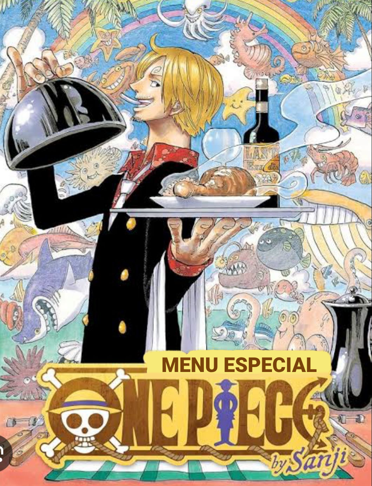

Cardápio de Aniversário
2 anos do Noah
Entradas
Batata frita
Frios (presunto, queijo e azeitonas)
Lanche natural
Mini x-salada
Salgados
Coxinha de frango cremosa
Risoles de pizza
Empada de frango
Esfira de carne com queijo
Esfira de 4 queijos
Quiche de alho poró
Quiche de cabotia com carne seca
Trouxinha de ricota com tomate seco
Prato principal
Arroz branco
Strogonoff de carne
Batata palha
Saladas com molhos variados
Bebidas
Coca Cola
Coca Cola zero
Guaraná Kuat
Suco de laranja
Água mineral
Bolo e Doces
Bolo floresta de morango com chocolate belga (acompanha de sorvete de creme)
Brigadeiro
Brigadeiro de ninho com nutella
Olhos verdes
Bombom de doce de leite com abacaxi
Trufa de ninho
Camafeu de nozes